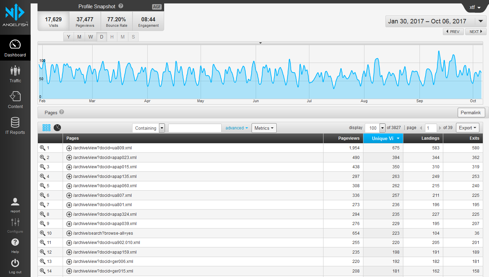

<!DOCTYPE html>
<html lang="en">
  <head>
    <meta charset="utf-8" />
    <meta name="viewport" content="width=device-width, initial-scale=1.0, maximum-scale=1.0, user-scalable=no" />

    <title>Description and Access in the University Archives</title>
    <link rel="stylesheet" href="./css/reveal.css" />
    <link rel="stylesheet" href="./css/theme/serif.css" id="theme" />
    <link rel="stylesheet" href="./css/highlight/zenburn.css" />
    <link rel="stylesheet" href="./css/print/paper.css" type="text/css" media="print" />

  </head>
  <body>
    <div class="reveal">
      <div class="slides"><section  data-markdown><script type="text/template">
<style>
#fLeft {float: left; max-width: 50%;}
#fRight {float: right; max-width: 50%;}
#smallLink {font-size: 18px;}
.whitebg {background-color: #fff; margin-top: 30% !important; padding: 15px !important; border-radius: 15px;}
</style>

## Description and Acquisitions in the University Archives

Gregory Wiedeman<br/>
University Archivist
</script></section><section  data-markdown><script type="text/template">
* Overview of the Department
    * Discussion
* Arrangement & Description
* University Archives Extensible Processing
    * Discussion
* Description Exercise
* Collecting Born-Digital Records
    * Discussion
* Stacks tour and discussion
</script></section><section  data-markdown><script type="text/template">
### M.E. Grenander Department of Special Collections & Archives

* Collects unique records of enduring value
* Provide access and encourage use
</script></section><section  data-markdown><script type="text/template">
## About us

5 archivists
* Brian Keough, Head Archivist
* Jodi Boyle, Supervisory Archivist
* Melissa McMullen, Project Archivist
* Mark Wolfe, Curator of Digital Collections
* Gregory Wiedeman, University Archivist
* David Mitchell, Mathes Curator
* 7-10 Student Assistants
</script></section><section  data-markdown><script type="text/template">
### Collecting Areas and Department History

* Modern Political Archives
* National Death Penalty Archives
* University Archives
* Business, Literary, and Miscellaneous Manuscripts
* Rare Books
    * Mathes Childrens Literature Collection
* German and Jewish Intellectual Émigré
</script></section><section  data-markdown><script type="text/template">
### Modern Political Archives

* State and Federal Representatives
* Rockefeller-era aids
* New York Coalition for Alternatives to Pesticides Records
* Women's Building Collection
* NOW NYS and Albany chapters
* NYCLU Records
</script></section><section  data-markdown><script type="text/template">
### National Death Penalty Archives

* Watt Espy Papers
* David Baldus Papers
* Catholics Against Capital Punishment Records
* Correctional Association of New York Records
* People on death row, family members
</script></section><section  data-markdown><script type="text/template">
### Business, Literary, and Miscellaneous Manuscripts

* William Kennedy Papers
* Marcia Brown Papers
* Gregory Maguire Papers
</script></section><section  data-markdown><script type="text/template">
### [The University Archives](https://library.albany.edu/archive/ua)

* University Records
	* Office of the President
	* University Senate & Council
	* Provost, Academic Administration
    * Centers & Institutes
    * Reference Collections
	* Web Archives
* Student Groups and Manuscripts
	* Student Association
	* Albany Student Press
	* Faculty and Alumni Papers
</script></section><section  data-markdown><script type="text/template">
### How Users Access Materials

* Reference generally divided up by collecting area
* Walk-ins, desk always staffed
* Email
* Coordination with faculty
* [Web request](https://archives.albany.edu/description/catalog/ua200aspace_f5c3dabc115da2e8ebef03e1b37f9008) triaged through Melissa
* Ticket system to track statistics
</script></section><section  data-markdown><script type="text/template">

* Does this meet you expectations?
* How are other archives different?
</script></section><section  data-markdown><script type="text/template">
## DACS

[Describing Archives: A Content Standard](https://github.com/saa-ts-dacs/dacs)

* Information Systems Standards (EAD, ASpace)
* Data Structure Standards (EAD)
* Data Content Standards (DACS)
* Data Values Standards (LCSH, AAT)
</script></section><section  data-markdown><script type="text/template">
### History of Archival Description

* Manuscript & Records traditions
* Creation of National Archives
* National Union Catalog for Manuscript Collections (NUCMC)
* Local ad-hoc practices
* Standardization of Finding Aids
* MARC-AMC
* EAD
* ISAD(G) and DACS
</script></section><section  data-markdown><script type="text/template">
### Records in Context (RiC)

* ISAD(G), ISAAR(CPF), etc. --> RiC
* [Records in Context](https://www.ica.org/en/records-in-contexts-ric-a-standard-for-archival-description-presentation-congress-2016)
* [RiC-CM](https://www.ica.org/en/egad-ric-conceptual-model)
* RiC-O (Linked Data Ontology)
</script></section><section  data-markdown><script type="text/template">
### Old DACS Priciples, 1-6

1. Records in archives possess unique characteristics
2. The principle of respect des fonds is the basis of archival arrangement and description
3. Arrangement involves the identification of groupings within the material
4. Description reflects arrangement
5. The rules of description apply to all archival materials, regardless of form or medium
6. The principles of archival description apply equally to records created by corporate bodies, individuals, or families
</script></section><section  data-markdown><script type="text/template">
### Old DACS Princples, 7-8


* (7) Archival descriptions may be presented at varying levels of detail to produce a variety of outputs
    * Levels of description correspond to levels of arrangement.
    * Relationships between levels of description must be clearly indicated.
    * Information provided at each level of description must be appropriate to that level.
* (8) The creators of archival materials, as well as the materials themselves, must be described.
    </script></section><section  data-markdown><script type="text/template">
### Revised DACS Principles, 1-4
    
1. Archival description expresses professional ethics and values
2. Users are the fundamental reason for archival description
3. Archival description must be clear about what archivists know, what they don’t know, and how they know it.
</script></section><section  data-markdown><script type="text/template">
Records, agents, events, and the relationships between them are the four fundamental concepts that constitute archival description.

* Records must be described in aggregate and may be described in parts.
* The relationships among records, agents, and events are essential to understanding archives and must be described. 
* Record creators and other agents must be described sufficiently to fully understand the meaning of records.
* Events that are essential to understanding records must be described. 
</script></section><section  data-markdown><script type="text/template">
### Revised Principles, 5-7

* (5) Archival description privileges intellectual content in context. Descriptive rules apply equally to all records, regardless of format or carrier type. 
* (6) Each collection within a repository must have an archival description.
* (7) Archivists must have a user-driven reason to enhance existing archival description. 
</script></section><section  data-markdown><script type="text/template">
### Revised Principles, 8-11

* (8) Archival description should be easy to use, re-use, and share.
* (9) Archival description is accessible and intelligible.
* (10) Archivists must document and make discoverable the actions they take on records.
* (11) Archival description is a continuous intellectual endeavor.
    </script></section><section  data-markdown><script type="text/template">
## DACS Core Elements

	* Reference Code (Required)
	* Name and Location of Repository (Required)
	* Title (Required)
	* Date (Required)
	* Extent (Required)
	* Name of Creator(s) (Required)
	* Scope and Content (Required)
	* Conditions Governing Access (Required)
	* Languages and Scripts of the Material (Required)
	
	* Administrative/Biographical History (Optimum)
	* Access points (Optimum)
</script></section><section  data-markdown><script type="text/template">
## DACS Added Value Elements

	* Finding Aids (Added Value)	
	* Custodial History (Added Value)
	* Immediate Source of Acquisition (Added Value)
	* Conditions Governing Reproduction and Use (Added Value)
	* System of Arrangement (Added Value)
	* Technical Access (Added Value)
	* Physical Access (Added Value)
	* Appraisal, Destruction, and Scheduling Information (Added Value)
	* Accruals (Added Value)
	* Publication Note (Added Value)
	* Notes (Added Value)
	* Description Control (Added Value)
	* Existence and Location of Originals (Added Value)
	* Existence and Location of Copies (Added Value)
	* Related Archival Materials (Added Value)
</script></section><section  data-markdown><script type="text/template">
## DACS Principles revision

What do you think?
</script></section><section  data-markdown><script type="text/template">
### Extensible Processing in the University Archives

* No Detailed Processing vs. Minimal Processing/MPLP
* Creative approaches to scale are fundamental to archives
* We will never have enough resources
* Late 20th century records are very stable
* Processing is resource management
</script></section><section  data-markdown><script type="text/template">
### Handling Scale with our Principles

* Establishing baseline processing for everything
* User-based reason for adding additional description
    * Request statistics
    * Web usage statistics
</script></section><section  data-markdown><script type="text/template">

</script></section><section  data-markdown><script type="text/template">
### [Yearbook Collection](https://archives.albany.edu/description/catalog/ua807)

* No description until 2015
* Second most visited collection page
* Most requested for digitization
</script></section><section  data-markdown><script type="text/template">
### Don't describe containers

* Users don't care what box its in
* Maureen Callahan, "On Containers"
* [https://icantiemyownshoes.wordpress.com/2014/12/15/on-containers/](https://icantiemyownshoes.wordpress.com/2014/12/15/on-containers/)
</script></section><section  data-markdown><script type="text/template">
### [Provost's Office Records](https://archives.albany.edu/description/catalog/ua500)

* Only preserve permanent records
* Bulletins are used often
    * Item-level
* Program Registration Letters
    * Item-level
* Program Registration Letters
    * Described as found
    * Ordered description not files
    * Restricted pending review
</script></section><section  data-markdown><script type="text/template">
### [Division of Research Records](https://archives.albany.edu/description/catalog/ua400)

* No real accssion records
* Dates on boxes
* Describe records as found
* No refoldering unless neccessary
* Can now describe [International Programs](https://archives.albany.edu/description/catalog/ua550)
</script></section><section  data-markdown><script type="text/template">
### Digitization on Demand

Users don't want help finding things, they want help getting things

* Empower users to make requests
* Appraisal by direct use
* Use cheap digitization methods
    * Sheet feeders!
* [Connect digital objects with description](https://archives.albany.edu/concern/daos/wp988k33r)
    * Metadata is most costly part of digitization
* Bearman & Lytle, "The Power of Provenance"
</script></section><section  data-markdown><script type="text/template">
## Extensible Processing

* Establish minimum level for all collections
* User-based reasons to add description
* "Arrangement is a noun, not a verb"
* Avoid granular preservation interventions in most cases
* Don't describe containers
* Make the robots do the work

What do you think?
</script></section><section  data-markdown><script type="text/template">
## Description Exercise

* Apply DACS to your collection
* Read desciption from another group
</script></section><section  data-markdown><script type="text/template">
### University Archives Collecting

* Formal records management program until cut in 1990s
	* Very effective collecting in 1960s and 1970s
* Records Management "distributed" among offices
* Most permanent records should come to me
* Transfers used to happen during moves, when space needed
	* No longer sufficient
* Misunderstanding of archives and our role
</script></section><section  data-markdown><script type="text/template">
## SUNY Records Retention

* [SUNY Records Retention and Disposition Schedule](https://system.suny.edu/compliance/records/records-retention/records-retention-schedule/ "SUNY Records Retention and Disposition Schedule")

* [Office of the Senior VP for Academic Affairs and Provost](https://archives.albany.edu/description/catalog/ua500)

University records are public records, subject to FOIL <!-- .element: class="fragment" data-fragment-index="1" -->
</script></section><section  data-markdown><script type="text/template">
### Records Collecting in Practice

* Files dispersed around the University
    * Boxes and filing cabinets in storage areas
	* Local Computers
	* Network Shares
	* Cloud Storage
	* Different Software Applications
* Files On the Live Web
	* Web crawling
</script></section><section  data-markdown><script type="text/template">
### Prioritizing Born-Digital

* Advantages
    * The master copy in most cases, often only copy
    * Easier to provide access
    * Often comes with more useful creator metadata
    
* Disadvantages
    * Few immediate reasons to manage or transfer
    * Requires long term institutional commitment
    * Cost to develop and implement systems
    * Cost to maintain systems
    </script></section><section  data-markdown><script type="text/template">
<!-- .slide: data-background="img-iipc/minutes.png" -->
</script></section><section  data-markdown><script type="text/template">
<!-- .slide: data-background="img-iipc/undergradBulletin.png" -->
</script></section><section  data-markdown><script type="text/template">
<!-- .slide: data-background="img/applications1.png" -->
</script></section><section  data-markdown><script type="text/template">
<!-- .slide: data-background="img/applications2.png" -->
</script></section><section  data-markdown><script type="text/template">
#### [Ben Goldman, "Outfitting a Born-Digital Archives Program"<br/><i>Practical Technology for Archives</i>&nbsp;&nbsp; Issue 2 (June 2014)](http://https://practicaltechnologyforarchives.org/issue2_goldman/)


<!-- .slide: data-background="img/diskImaging.jpg" -->

</script></section><section  data-markdown><script type="text/template">
### Disk Imaging

* [BitCurator](https://bitcurator.net/)
* Copies all the bits
* Deleted files too
* Can recreate the disk
* Useful for external media and personal papers
* Institutional archives involve disposal
</script></section><section  data-markdown><script type="text/template">
### Building an Institutional Records Collecting Program

* Avoid unsoliticed donations
* Systematic application of the retention schedule 
    * applied to each department
* Format-neutral practices
* Requires digital infrastructure
</script></section><section  data-markdown><script type="text/template">
### Digital Infrastructure

* [ArchivesSpace](http://sandbox.archivesspace.org/)
* [ArcLight](https://archives.albany.edu/description/)
* [Hyrax](https://archives.albany.edu/catalog)
* [Website](https://library.albany.edu/archive/)
</script></section><section  data-markdown><script type="text/template">
### Connections through APIs

* [Archive-It API](http://wayback.archive-it.org/3308/timemap/cdx?url=http://www.albany.edu/undergraduate_bulletin/)
* [Wayback Machine API](https://web.archive.org/cdx/search/cdx?url=http://www.albany.edu/undergraduate_bulletin/)
* [ArchivesSpace API](https://archivesspace.github.io/archivesspace/api/)
* [ArchivesSnake](https://github.com/archivesspace-labs/ArchivesSnake)


	from asnake.aspace import ASpace

    aspace = ASpace()
    repo = aspace.repositories(2)

    for resource in repo.resources:
        print (resource.id_0 + ' ' + resource.title)

        apap001 American Association of University Professors, Albany Chapter Records
        apap002 American Association of University Women, Albany Branch Records
        apap003 Association of Colleges and Universities of the State of New York (ACUSNY) Records
        ...
</script></section><section  data-markdown><script type="text/template">
### APIs help enable maintainable workflows

* Allows Separation of concern
    * No huge all-inclusive systems
* [Find-it](http://libstaff/find-it/)
                      </script></section><section  data-markdown><script type="text/template">
### How do you collect records?

* Automated digital transfers
    * Authentication is biggest barrier
* Web crawling
* Paper when maintained as such
    * Imaging disks in boxes
</script></section><section  data-markdown><script type="text/template">
<!-- .slide: data-background="img/transferShares.png" -->
</script></section><section  data-markdown><script type="text/template">
### Transfer Scripts

* [Documentation](https://wiki.albany.edu/display/SCA/Digital+Records)
* Network Folder Share
	* Archives and creator has access
* Python script, can be run on task scheduler
* Spreadsheet log files of files transferred
* Uses or creates ArchivesSpace accession record
</script></section><section  data-markdown><script type="text/template">
## SIPs and AIPs

* [Bagit-python](https://github.com/LibraryOfCongress/bagit-python)
* \\\\Romeo\SPE\ingest
* \\\\Romeo\SPE\processing
* \\\\Lincoln\Masters\Archives\SIP
* \\\\Lincoln\Masters\Archives\AIP
</script></section><section  data-markdown><script type="text/template">
### Focus on the challenging work, automate the busywork

Not all can or should be automated

* Description is important and time consuming
* Managing restrictions and privacy
</script></section><section  data-markdown><script type="text/template">
* This is a lot
* Institutional records and manuscripts are different
* Resource gaps
</script></section><section  data-markdown><script type="text/template">
* Overview of the Department
    * Discussion
* Arrangement & Description
* University Archives Extensible Processing
    * Discussion
* Description Exercise
* Collecting Born-Digital Records
    * Discussion
* Stacks tour and discussion

</script></section></div>
    </div>

    <script src="./js/reveal.js"></script>

    <script>
      function extend() {
        var target = {};
        for (var i = 0; i < arguments.length; i++) {
          var source = arguments[i];
          for (var key in source) {
            if (source.hasOwnProperty(key)) {
              target[key] = source[key];
            }
          }
        }
        return target;
      }

      // Optional libraries used to extend on reveal.js
      var deps = [
        { src: './plugin/markdown/marked.js', condition: function() { return !!document.querySelector('[data-markdown]'); } },
        { src: './plugin/markdown/markdown.js', condition: function() { return !!document.querySelector('[data-markdown]'); } },
        { src: './plugin/highlight/highlight.js', async: true, callback: function() { hljs.initHighlightingOnLoad(); } },
        { src: './plugin/zoom-js/zoom.js', async: true },
        { src: './plugin/notes/notes.js', async: true },
        { src: './plugin/math/math.js', async: true }
      ];

      // default options to init reveal.js
      var defaultOptions = {
        controls: true,
        progress: true,
        history: true,
        center: true,
        transition: 'default', // none/fade/slide/convex/concave/zoom
        dependencies: deps
      };

      // options from URL query string
      var queryOptions = Reveal.getQueryHash() || {};

      var options = extend(defaultOptions, {"transition":"fade"}, queryOptions);
    </script>


    <script>
      Reveal.initialize(options);
    </script>
  </body>
</html>
